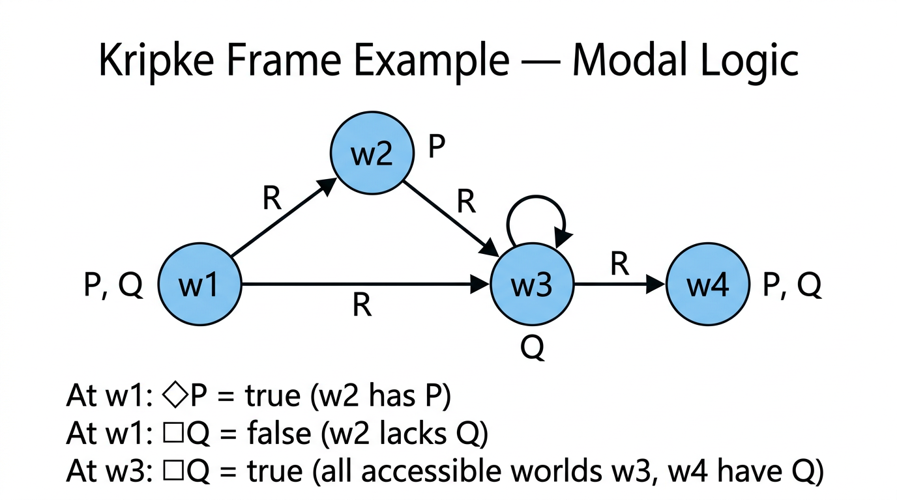

Modal Logic — COMP0003 Formal Logic¶
Lecture-style notes covering Logic Lectures 13–15. Modal logic extends propositional logic with operators for possibility (\(\Diamond\)) and necessity (\(\Box\)), interpreted over Kripke frames — directed graphs of "possible worlds." The semantics hinge on an accessibility relation \(R\): \(\Box A\) means \(A\) holds in every accessible world, \(\Diamond A\) means \(A\) holds in some accessible world. Restricting \(R\) to be reflexive or transitive yields different modal systems with distinct valid formulas — culminating in the system S4.
1. COMPLETE TOPIC SUMMARY¶
Why modal logic?¶
Classical propositional logic deals with statements that are true or false, period. But natural language distinguishes between what is true, what must be true, and what could be true:
- "It is raining." (fact)
- "It must be raining." (necessary truth)
- "It might be raining." (possible truth)
Modal logic formalises these distinctions by adding two operators — \(\Box\) ("necessarily") and \(\Diamond\) ("possibly") — to propositional logic. The resulting system has applications in philosophy, computer science (program verification, knowledge representation), and linguistics.
Syntax of modal logic¶
Modal logic formulas are built from:
- Proposition letters: \(P, Q, R, \ldots\) (as in propositional logic)
- Propositional connectives: \(\neg, \wedge, \vee, \to, \leftrightarrow\) (as usual)
- Modal operators: \(\Box A\) ("necessarily \(A\)" / "it must be that \(A\)") and \(\Diamond A\) ("possibly \(A\)" / "it might be that \(A\)")
Precedence. \(\Box\) and \(\Diamond\) bind tighter than binary connectives (like \(\neg\) does). So \(\Box P \to Q\) means \((\Box P) \to Q\), not \(\Box(P \to Q)\).
Grammar (BNF-style):
Translating English to modal logic¶
| English | Modal formula |
|---|---|
| "It is necessarily the case that \(P\)" | \(\Box P\) |
| "It is possible that \(P\)" | \(\Diamond P\) |
| "If \(P\) then necessarily \(Q\)" | \(P \to \Box Q\) |
| "It is necessary that if \(P\) then \(Q\)" | \(\Box(P \to Q)\) |
| "It is not possible that \(P\) and \(Q\)" | \(\neg \Diamond(P \wedge Q)\) |
| "Possibly \(P\) and possibly \(Q\)" | \(\Diamond P \wedge \Diamond Q\) |
The difference between \(P \to \Box Q\) and \(\Box(P \to Q)\) is a common exam trap — the scope of \(\Box\) matters.
Semantics — Kripke frames and models¶
The semantics of modal logic uses Kripke structures (also called Kripke models).
Frames¶

{kind=link}
A Kripke frame is a pair \(\mathcal{M} = (W, R)\) where:
- \(W\) is a nonempty set of worlds (also called states or points).
- \(R \subseteq W \times W\) is the accessibility relation. If \(Rww'\), we say world \(w'\) is accessible from \(w\).
Frames as directed graphs. Each world is a node; there is a directed edge from \(w\) to \(w'\) iff \(Rww'\). The graph can have self-loops (if \(Rww\)), cycles, or disconnected components.
Valuations¶
A valuation is a function \(\rho : \mathcal{L} \to \mathcal{P}(W)\) that assigns to each proposition letter the set of worlds where that letter is true. That is, \(P\) is true at world \(w\) iff \(w \in \rho(P)\).
A Kripke model¶
A Kripke model is a triple \((\mathcal{M}, \rho)\) — equivalently \((W, R, \rho)\) — a frame together with a valuation.
The satisfaction relation¶
The satisfaction relation \(\mathcal{M}, w \models_\rho A\) ("formula \(A\) is true at world \(w\) in model \(\mathcal{M}\) under valuation \(\rho\)") is defined inductively:
| Formula | Satisfaction condition |
|---|---|
| \(\mathcal{M}, w \models_\rho P\) | \(w \in \rho(P)\) |
| \(\mathcal{M}, w \models_\rho \neg A\) | \(\mathcal{M}, w \not\models_\rho A\) |
| \(\mathcal{M}, w \models_\rho A \wedge B\) | \(\mathcal{M}, w \models_\rho A\) and \(\mathcal{M}, w \models_\rho B\) |
| \(\mathcal{M}, w \models_\rho A \vee B\) | \(\mathcal{M}, w \models_\rho A\) or \(\mathcal{M}, w \models_\rho B\) |
| \(\mathcal{M}, w \models_\rho A \to B\) | \(\mathcal{M}, w \not\models_\rho A\) or \(\mathcal{M}, w \models_\rho B\) |
| \(\mathcal{M}, w \models_\rho \Diamond A\) | \(\exists w' \in W.\; Rww' \;\text{and}\; \mathcal{M}, w' \models_\rho A\) |
| \(\mathcal{M}, w \models_\rho \Box A\) | \(\forall w' \in W.\; Rww' \to \mathcal{M}, w' \models_\rho A\) |
Key intuition:
- \(\Box A\) at \(w\): "\(A\) holds in every world accessible from \(w\)."
- \(\Diamond A\) at \(w\): "\(A\) holds in some world accessible from \(w\)."
Validity and satisfiability¶
Satisfiability at a world. A formula \(A\) is satisfiable if there exists a model \((W, R, \rho)\) and a world \(w \in W\) such that \(\mathcal{M}, w \models_\rho A\).
Validity in a frame. \(A\) is valid in frame \(\mathcal{M} = (W, R)\) if for every valuation \(\rho\) and every world \(w \in W\), \(\mathcal{M}, w \models_\rho A\).
General validity. \(A\) is (generally) valid if it is valid in every frame — i.e. true at every world in every frame under every valuation.
Key results on validity¶
K combined with necessity of conjunction implies necessity of B — valid¶
Proof. Let \(\mathcal{M} = (W, R)\) be any frame, \(\rho\) any valuation, \(w\) any world. Suppose \(\mathcal{M}, w \models_\rho \Box(A \wedge (A \to B))\). Then for every \(w'\) with \(Rww'\):
- \(\mathcal{M}, w' \models_\rho A \wedge (A \to B)\)
- So \(\mathcal{M}, w' \models_\rho A\) and \(\mathcal{M}, w' \models_\rho A \to B\)
- By modus ponens, \(\mathcal{M}, w' \models_\rho B\)
Since this holds for every accessible \(w'\), \(\mathcal{M}, w \models_\rho \Box B\). The implication holds at every world in every frame, so the formula is valid. \(\blacksquare\)
Duality: not-necessarily-A iff possibly-not-A — valid¶
Proof. We show both directions at an arbitrary world \(w\) in any model.
\((\Rightarrow)\) Suppose \(\mathcal{M}, w \models_\rho \neg \Box A\). Then \(\mathcal{M}, w \not\models_\rho \Box A\), so there exists \(w'\) with \(Rww'\) and \(\mathcal{M}, w' \not\models_\rho A\). Thus \(\mathcal{M}, w' \models_\rho \neg A\), and since \(Rww'\), we have \(\mathcal{M}, w \models_\rho \Diamond \neg A\).
\((\Leftarrow)\) Suppose \(\mathcal{M}, w \models_\rho \Diamond \neg A\). Then there exists \(w'\) with \(Rww'\) and \(\mathcal{M}, w' \models_\rho \neg A\), i.e. \(\mathcal{M}, w' \not\models_\rho A\). So \(\mathcal{M}, w \not\models_\rho \Box A\), hence \(\mathcal{M}, w \models_\rho \neg \Box A\). \(\blacksquare\)
Duality. This gives a general principle: \(\Box\) and \(\Diamond\) are duals, just as \(\forall\) and \(\exists\) are duals in first-order logic:
Necessarily A implies possibly A — NOT generally valid¶
Counterexample. Take a frame with a single world \(w\) and \(R = \emptyset\) (no accessibility edges — \(w\) is isolated). Let \(\rho(P) = \emptyset\) (so \(P\) is false at \(w\)).
- \(\mathcal{M}, w \models_\rho \Box P\): vacuously true, since there are no worlds \(w'\) with \(Rww'\) — the universal condition \(\forall w'.\; Rww' \to \ldots\) is satisfied trivially.
- \(\mathcal{M}, w \not\models_\rho \Diamond P\): there is no \(w'\) with \(Rww'\) at all, so the existential condition fails.
Therefore \(\mathcal{M}, w \models_\rho \Box P\) but \(\mathcal{M}, w \not\models_\rho \Diamond P\), so \(\Box P \to \Diamond P\) fails at \(w\). \(\blacksquare\)
Insight. The isolated-world counterexample works because \(\Box\) is vacuously satisfied when nothing is accessible, while \(\Diamond\) requires at least one accessible world.
Necessarily A implies A — NOT generally valid¶
Counterexample. Same frame: one world \(w\), \(R = \emptyset\), \(\rho(P) = \emptyset\).
- \(\mathcal{M}, w \models_\rho \Box P\): vacuously true (no accessible worlds).
- \(\mathcal{M}, w \not\models_\rho P\): since \(w \notin \rho(P)\).
So \(\Box P \to P\) fails at \(w\). \(\blacksquare\)
Reflexive frames¶
A frame \((W, R)\) is reflexive if \(R\) is reflexive: \(\forall w \in W.\; Rww\).
In graph terms: every world has a self-loop.
Necessarily A implies A — valid iff the frame is reflexive¶
(\(\Rightarrow\)) If \(\Box A \to A\) is valid in \(\mathcal{M}\), then \(\mathcal{M}\) is reflexive.
Suppose \(\mathcal{M}\) is not reflexive: there exists \(w_0 \in W\) with \(\neg Rw_0 w_0\). Define \(\rho(P) = \{w' \in W \mid Rw_0 w'\}\) — i.e. \(P\) is true at exactly the worlds accessible from \(w_0\).
- For any \(w'\) with \(Rw_0 w'\): \(w' \in \rho(P)\), so \(\mathcal{M}, w' \models_\rho P\). Thus \(\mathcal{M}, w_0 \models_\rho \Box P\).
- But \(w_0 \notin \rho(P)\) (since \(\neg Rw_0 w_0\)), so \(\mathcal{M}, w_0 \not\models_\rho P\).
- Therefore \(\mathcal{M}, w_0 \models_\rho \Box P \wedge \neg P\), making \(\Box P \to P\) false at \(w_0\). Contradiction.
(\(\Leftarrow\)) If \(\mathcal{M}\) is reflexive, then \(\Box A \to A\) is valid in \(\mathcal{M}\).
Let \(w \in W\) and suppose \(\mathcal{M}, w \models_\rho \Box A\). Then for all \(w'\) with \(Rww'\), \(\mathcal{M}, w' \models_\rho A\). Since \(R\) is reflexive, \(Rww\), so taking \(w' = w\) gives \(\mathcal{M}, w \models_\rho A\). \(\blacksquare\)
Transitive frames¶
A frame \((W, R)\) is transitive if \(R\) is transitive: \(\forall u, v, w \in W.\; (Ruv \wedge Rvw) \to Ruw\).
Necessarily A implies necessarily necessarily A — valid iff the frame is transitive¶
(\(\Leftarrow\)) If \(\mathcal{M}\) is transitive, then \(\Box A \to \Box \Box A\) is valid in \(\mathcal{M}\).
Suppose \(\mathcal{M}, w \models_\rho \Box A\). We need \(\mathcal{M}, w \models_\rho \Box \Box A\), i.e. for all \(w'\) with \(Rww'\), \(\mathcal{M}, w' \models_\rho \Box A\).
Take any \(w'\) with \(Rww'\) and any \(w''\) with \(Rw'w''\). By transitivity, \(Rww''\). Since \(\mathcal{M}, w \models_\rho \Box A\) and \(Rww''\), we get \(\mathcal{M}, w'' \models_\rho A\). Since \(w''\) was arbitrary among worlds accessible from \(w'\), we have \(\mathcal{M}, w' \models_\rho \Box A\). Since \(w'\) was arbitrary among worlds accessible from \(w\), we have \(\mathcal{M}, w \models_\rho \Box \Box A\). \(\blacksquare\)
(\(\Rightarrow\)) If \(\Box A \to \Box \Box A\) is valid in \(\mathcal{M}\), then \(\mathcal{M}\) is transitive.
Suppose \(\mathcal{M}\) is not transitive: there exist \(u, v, w \in W\) with \(Ruv\), \(Rvw\), but \(\neg Ruw\). Define \(\rho(P) = \{w' \in W \mid Ruw'\}\).
- For any \(w'\) with \(Ruw'\): \(w' \in \rho(P)\), so \(\mathcal{M}, w' \models_\rho P\). Thus \(\mathcal{M}, u \models_\rho \Box P\).
- Now consider \(v\) (with \(Ruv\)): for \(\Box P\) at \(v\), we need \(P\) at all \(w'\) with \(Rvw'\). In particular, \(Rvw\) but \(w \notin \rho(P)\) (since \(\neg Ruw\)), so \(\mathcal{M}, w \not\models_\rho P\). Therefore \(\mathcal{M}, v \not\models_\rho \Box P\).
- Since \(Ruv\) and \(\mathcal{M}, v \not\models_\rho \Box P\), we have \(\mathcal{M}, u \not\models_\rho \Box \Box P\).
- So \(\mathcal{M}, u \models_\rho \Box P \wedge \neg \Box \Box P\), making \(\Box P \to \Box \Box P\) false at \(u\). Contradiction. \(\blacksquare\)
Modal logic S4¶
S4 is the modal logic determined by frames that are both reflexive and transitive.
Axioms of S4 (in addition to all propositional tautologies and the distribution axiom \(\Box(A \to B) \to (\Box A \to \Box B)\)):
| Axiom name | Formula | Frame condition |
|---|---|---|
| T (reflexivity axiom) | \(\Box A \to A\) | \(R\) is reflexive |
| 4 (transitivity axiom) | \(\Box A \to \Box \Box A\) | \(R\) is transitive |
A formula is S4-valid iff it is valid in all reflexive and transitive frames.
Remarks:
- S4 is one of many modal systems. Others include K (no frame conditions), T (reflexive only), S5 (reflexive, symmetric, and transitive — equivalence relations), and GL (Gödel–Löb logic, for provability).
- In S4, both \(\Box A \to A\) and \(\Box A \to \Box \Box A\) are valid, so iterated modalities can be simplified: \(\Box \Box A \equiv \Box A\).
Exam revision summary — four subtopics of COMP0003¶
The COMP0003 module (as indicated in the lectures) covers four main blocks:
- Propositional logic: syntax, semantics (truth tables), tautologies, satisfiability, natural deduction, soundness and completeness.
- First-order logic (FOL): predicates, quantifiers (\(\forall, \exists\)), structures, satisfaction, validity, natural deduction for FOL.
- Induction: ordinary induction, complete (strong) induction, infinite descent, well-ordering.
- Modal logic: \(\Box\), \(\Diamond\), Kripke frames, satisfaction, validity, frame conditions (reflexive, transitive), S4.
2. EXAM-STYLE QUESTIONS (WITH MODEL ANSWERS)¶
Q1 — Satisfaction at a world¶
Question. Consider the frame \(\mathcal{M} = (W, R)\) with \(W = \{w_1, w_2, w_3\}\) and \(R = \{(w_1, w_2), (w_1, w_3), (w_2, w_3)\}\). Let \(\rho(P) = \{w_2\}\) and \(\rho(Q) = \{w_2, w_3\}\). Determine whether \(\mathcal{M}, w_1 \models_\rho \Box Q\) and whether \(\mathcal{M}, w_1 \models_\rho \Diamond P\).
Model answer.
\(\Box Q\) at \(w_1\): The worlds accessible from \(w_1\) are \(w_2\) and \(w_3\) (since \(Rw_1 w_2\) and \(Rw_1 w_3\)). Is \(Q\) true at both?
- \(w_2 \in \rho(Q) = \{w_2, w_3\}\): yes.
- \(w_3 \in \rho(Q)\): yes.
Both accessible worlds satisfy \(Q\), so \(\mathcal{M}, w_1 \models_\rho \Box Q\). True.
\(\Diamond P\) at \(w_1\): Is there an accessible world where \(P\) is true?
- \(w_2 \in \rho(P) = \{w_2\}\): yes, and \(Rw_1 w_2\).
So \(\mathcal{M}, w_1 \models_\rho \Diamond P\). True.
Q2 — Counterexample to general validity¶
Question. Show that \(\Box A \to A\) is not generally valid by constructing a counterexample.
Model answer. Let \(\mathcal{M} = (\{w\}, \emptyset)\) — a single world \(w\) with no accessibility edges. Let \(\rho(P) = \emptyset\).
- \(\mathcal{M}, w \models_\rho \Box P\): There are no \(w'\) with \(Rww'\), so the condition "\(\forall w'.\; Rww' \to \mathcal{M}, w' \models_\rho P\)" is vacuously true.
- \(\mathcal{M}, w \not\models_\rho P\): since \(w \notin \rho(P) = \emptyset\).
Therefore \(\mathcal{M}, w \models_\rho \Box P\) and \(\mathcal{M}, w \not\models_\rho P\), so \(\Box P \to P\) is false at \(w\). The formula is not generally valid. \(\blacksquare\)
Q3 — Prove validity of the □/◇ duality (not-□A iff ◇¬A)¶
Question. Prove that \(\neg \Box A \leftrightarrow \Diamond \neg A\) is valid in all frames.
Model answer. Let \(\mathcal{M} = (W, R)\) be any frame, \(\rho\) any valuation, \(w \in W\).
\((\Rightarrow)\) Suppose \(\mathcal{M}, w \models_\rho \neg \Box A\). Then \(\mathcal{M}, w \not\models_\rho \Box A\): not every accessible world satisfies \(A\). So \(\exists w' \in W\) with \(Rww'\) and \(\mathcal{M}, w' \not\models_\rho A\), i.e. \(\mathcal{M}, w' \models_\rho \neg A\). Since \(Rww'\) and \(w'\) satisfies \(\neg A\), by the semantics of \(\Diamond\): \(\mathcal{M}, w \models_\rho \Diamond \neg A\).
\((\Leftarrow)\) Suppose \(\mathcal{M}, w \models_\rho \Diamond \neg A\). Then \(\exists w'\) with \(Rww'\) and \(\mathcal{M}, w' \models_\rho \neg A\), i.e. \(\mathcal{M}, w' \not\models_\rho A\). So not all accessible worlds satisfy \(A\), meaning \(\mathcal{M}, w \not\models_\rho \Box A\), hence \(\mathcal{M}, w \models_\rho \neg \Box A\).
Both directions hold at every world in every frame under every valuation. \(\blacksquare\)
Q4 — Prove □A → A is valid iff the frame is reflexive¶
Question. Prove that \(\Box A \to A\) is valid in a frame \(\mathcal{M} = (W, R)\) if and only if \(R\) is reflexive.
Model answer.
(\(\Leftarrow\)) Suppose \(R\) is reflexive. Let \(w \in W\) and \(\rho\) any valuation with \(\mathcal{M}, w \models_\rho \Box A\). Then \(\forall w'.\; Rww' \to \mathcal{M}, w' \models_\rho A\). Since \(R\) is reflexive, \(Rww\), so taking \(w' = w\): \(\mathcal{M}, w \models_\rho A\). Thus \(\Box A \to A\) holds at every world.
(\(\Rightarrow\)) Suppose \(\Box A \to A\) is valid in \(\mathcal{M}\) but \(R\) is not reflexive: there exists \(w_0\) with \(\neg Rw_0 w_0\). Define \(\rho(P) = \{w' \in W \mid Rw_0 w'\}\). Then:
- For all \(w'\) with \(Rw_0 w'\): \(w' \in \rho(P)\), so \(\mathcal{M}, w' \models_\rho P\). Hence \(\mathcal{M}, w_0 \models_\rho \Box P\).
- But \(w_0 \notin \rho(P)\) (since \(\neg Rw_0 w_0\)), so \(\mathcal{M}, w_0 \not\models_\rho P\).
This makes \(\Box P \to P\) false at \(w_0\), contradicting validity. \(\blacksquare\)
Q5 — S4 and frame conditions¶
Question. What frame conditions define the modal logic S4? State the two corresponding axioms and explain why \(\Box \Box A \equiv \Box A\) in S4.
Model answer. S4 is the modal logic of frames where \(R\) is both reflexive and transitive. The axioms are:
- Axiom T: \(\Box A \to A\) (corresponds to reflexivity).
- Axiom 4: \(\Box A \to \Box \Box A\) (corresponds to transitivity).
To show \(\Box \Box A \equiv \Box A\) in S4:
- \(\Box A \to \Box \Box A\): this is Axiom 4, valid by transitivity.
- \(\Box \Box A \to \Box A\): instantiate Axiom T with the formula \(\Box A\): \(\Box(\Box A) \to \Box A\). This is valid by reflexivity (applying the T axiom to the formula \(\Box A\)).
Combining both directions: \(\Box A \leftrightarrow \Box \Box A\) is S4-valid. So iterated \(\Box\) operators collapse in S4. \(\blacksquare\)
3. MUST-KNOW KEY POINTS¶
- Syntax: \(\Box A\) ("necessarily \(A\)") and \(\Diamond A\) ("possibly \(A\)") extend propositional logic. Both bind tighter than binary connectives.
- Kripke frame: \((W, R)\) with \(W\) a nonempty set of worlds and \(R \subseteq W \times W\) the accessibility relation. Frames are directed graphs.
- Valuation: \(\rho : \mathcal{L} \to \mathcal{P}(W)\) assigns proposition letters to sets of worlds.
- Satisfaction: \(\Box A\) at \(w\) iff \(A\) holds at all \(R\)-accessible worlds; \(\Diamond A\) at \(w\) iff \(A\) holds at some \(R\)-accessible world.
- Duality: \(\neg \Box A \equiv \Diamond \neg A\) and \(\neg \Diamond A \equiv \Box \neg A\) — valid in all frames.
- \(\Box A \to \Diamond A\) is NOT valid — fails at isolated worlds (\(R = \emptyset\)) where \(\Box\) is vacuously true.
- \(\Box A \to A\) is NOT generally valid — same isolated-world counterexample.
- Reflexive frames (\(Rww\) for all \(w\)): \(\Box A \to A\) is valid iff the frame is reflexive.
- Transitive frames: \(\Box A \to \Box \Box A\) is valid iff the frame is transitive.
- S4 = reflexive + transitive frames. Axioms: \(\Box A \to A\) (T) and \(\Box A \to \Box \Box A\) (4).
4. HIGH-PRIORITY TOPICS¶
🔴 Must Know¶
- Syntax: \(\Box\), \(\Diamond\), precedence rules. Translating English to modal formulas.
- Kripke frame definition \((W, R)\) and the concept of worlds and accessibility.
- Satisfaction relation — all seven clauses, especially \(\Box\) and \(\Diamond\).
- Evaluating formulas at specific worlds in a given model (trace through the definition).
- Duality of \(\Box\) and \(\Diamond\): proof that \(\neg \Box A \leftrightarrow \Diamond \neg A\).
- Counterexample: \(\Box A \to A\) and \(\Box A \to \Diamond A\) fail at isolated worlds — know how to construct and explain this.
- Reflexivity characterisation: \(\Box A \to A\) valid iff reflexive (both directions of the proof).
- Transitivity characterisation: \(\Box A \to \Box \Box A\) valid iff transitive (both directions).
🟡 Important¶
- S4 axioms (T and 4) and the corresponding frame conditions. Collapse of iterated modalities: \(\Box \Box A \equiv \Box A\).
- Validity vs satisfiability distinction (in a frame vs generally).
- Proof of \(\Box(A \wedge (A \to B)) \to \Box B\) — as a template for showing formulas are valid.
- Constructing counterexample frames to disprove general validity — knowing which "pathological" frames to try (isolated worlds, asymmetric edges, etc.).
🟢 Useful but Lower Priority¶
- Other modal systems: K, T, S5, GL — names and rough frame conditions.
- Applications of modal logic in computer science (knowledge, belief, temporal reasoning).
- The full exam revision summary mapping four COMP0003 subtopics.
5. TOPIC INTERCONNECTIONS & BIGGER PICTURE¶
- Propositional logic (Lectures 1–5) is the base language that modal logic extends. Every propositional tautology remains valid in modal logic; the \(\Box\)/\(\Diamond\) operators add a new dimension of reasoning about possible versus actual truth.
- First-order logic (Lectures 6–10) has quantifiers \(\forall\) and \(\exists\) over a domain. \(\Box\) and \(\Diamond\) behave analogously: \(\Box\) = "for all accessible worlds" and \(\Diamond\) = "there exists an accessible world." The duality \(\neg \Box \equiv \Diamond \neg\) mirrors \(\neg \forall \equiv \exists \neg\).
- Induction (Lectures 11–12) connects in that frame-condition proofs (reflexivity, transitivity characterisations) sometimes use structural arguments or case analysis familiar from inductive reasoning. Well-foundedness of accessibility relations is central to modal logics of provability (GL).
- Automata theory (the other half of COMP0003) intersects via model checking: verifying whether a Kripke structure satisfies a modal/temporal formula is algorithmic, relating to state-space exploration in finite automata.
- Temporal logic (CTL, LTL) extends modal logic with operators for "always in the future" and "eventually," used in hardware and software verification — a natural continuation of the Kripke semantics framework.
6. EXAM STRATEGY TIPS¶
- Draw the frame. For any question involving a specific model, sketch the directed graph with labelled worlds and edges. Mark which proposition letters are true at each world. This prevents mistakes when evaluating nested modalities.
- Evaluate inside-out. For nested formulas like \(\Box(\Diamond P \to Q)\), first evaluate \(\Diamond P\) at each world, then \(\Diamond P \to Q\) at each world, then apply \(\Box\).
- Isolated-world trick. The frame \((\{w\}, \emptyset)\) is the go-to counterexample for anything involving \(\Box\) being vacuously true. Use it whenever asked to show a formula is not generally valid.
- Both directions in "iff" proofs. For "\(\Box A \to A\) valid iff reflexive," you must prove (\(\Leftarrow\)) and (\(\Rightarrow\)) separately. The (\(\Rightarrow\)) direction typically constructs a clever valuation \(\rho\) tailored to expose the failure.
- Precedence matters. \(\Box P \to Q\) is \((\Box P) \to Q\), not \(\Box(P \to Q)\). Misplacing parentheses changes the meaning entirely — annotate your work with explicit parentheses when in doubt.
- Duality as a shortcut. Instead of proving something about \(\Diamond\) from scratch, use \(\Diamond A \equiv \neg \Box \neg A\) to reduce to a \(\Box\)-statement (or vice versa). Examiners accept this equivalence without re-proof once it has been established.
- Name the axioms. When invoking S4 properties, say "by Axiom T (reflexivity)" or "by Axiom 4 (transitivity)" rather than just "by S4." This shows you know which condition does the work.
These notes cover Logic Lectures 13–15 (Modal Logic) for COMP0003 Formal Logic; follow your lecturer's notation if it differs.